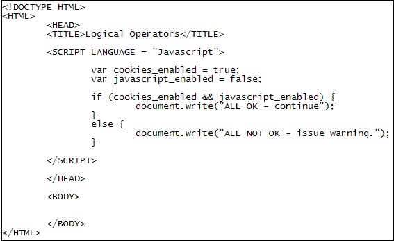

Javascript Logical Operators
This lessons continues from the previous one.
Operators you will want to use with your IF Statements are the logical ones. The logical operators give you more options for your IF statements. There are only three to get the hang of:
&& Two ampersands mean AND
|| Two pipe characters mean OR
! One exclamation mark/point means NOT
As an example, create the following code for a web page: (You can use your basic template, which you created earlier.)

So we start out by setting up two Boolean variables:
var cookies_enabled = true;
var javascript_enabled = false;
We then want to check what's in these two variables. The IF statement does this with the aid of the two ampersands ( && ) between the round brackets:
if ( cookies_enabled && javascript_enabled ) {
Notice the shorthand way to check Boolean variables:
cookies_enabled && javascript_enabled
We could have done this:
cookies_enabled == true && javascript_enabled == true
But if you're checking Boolean variables you can miss out the == true. Javascript will then think you're checking for a true value, which you are. So the whole line reads "IF cookies_enabled equals true AND javascript_enabled equals true".
If both are indeed true then the whole statement between the round brackets becomes true. In which case, the first document.write will get executed. However, if just one of these turns out to be false then the whole statement becomes false. In which case, the else part will be executed.
Once you've finished typing the script, try it out. Now change javascript_enabled = false to javascript_enabled = true. Save the changes and refresh the web page in your browser. You should find that the first document.write will be printed.
The OR operators ( ||) allow you to check if just one of the values is true. (On a UK keyboard the OR operators are just to the left of the Z key. Hold down a SHIFT key first.) Change your IF statement to this:
if ( cookies_enabled || javascript_enabled ) {
The whole line now reads "IF cookies_enabled equals true OR javascript_enabled equals true".
Set cookies_enabled to false on the first line of your code. Save your changes and rerun your script. You should find that, again, the first document.write will be printed. Set both variables to false and the else part will be executed.
So with the OR operators just one part of the IF needs to evaluate to true and the whole statement will be true.
Let's have one more example just to clear things. Change your script to this:
var age = 24;
if ( age >= 18 && age <= 30 ) {
document.write("Between 18 and 30");
}
else {
document.write("Not Between 18 and 30");
}
This script checks to an age range. First we set a variable called age to a value of 24. We then use an IF statement to see what's in the variable. Between the round brackets we have this:
age >= 18 && age <= 30
This reads, "IF age is greater than or equal to 18 AND age is less than or equal to 30". If both those things are true then the whole statement becomes true, and the first document.write gets executed. If just one of them is false then the whole statement becomes false. To illustrate that, change the age variable from 24 to 14. Save the change and refresh the page in your browser. You should find that the else part gets executed.
Exercise
Add an ELSE IF part to your code. Make this ELSE IF part check the age ranges
13 to 17.
The NOT Operator
You saw above the shorthand way to check for true values:
if ( cookies_enabled && javascript_enabled ) {
This saves you having to type cookies_enabled == true. You can do this because by default Javascript will check your Boolean variables for a true value. If you want to check for a false value, you can use the NOT operator. (The NOT operator is just an exclamation mark/point.) Examine this code:
if ( !cookies_enabled) {
}
Now the cookies_enabled variable has a NOT operator before it. By default, Javascript will check for a true value. By placing a NOT operator before a Boolean value you're saying "If NOT true". If something is not true then it's false. In other words, if you want a quick way to check for a false value, type an exclamation mark before your Boolean variable.
A popular use of the NOT operator is to toggle a Boolean to either true or false. It's done like this:
bool_value = !bool_value;
On the right hand side of the equal sign the NOT operator flips the value. Once Javascript has flipped the true or false value it puts the answer into the variable on the left. This is the same variable as the one the right hand side. So bool_value will be the opposite of what it was before. In other words, if the variable bool_value was true before this line then it will be false after it. Likewise, if it was false before then it will be true after. Test it out with this code:
var bool_value = true;
document.write( bool_value + "<BR>" );
bool_value = !bool_value;
document.write( bool_value );
You should find that it writes true the first time and false the second time. Change the first line from true to false. Now rerun your script. It should be the other way round this time: it writes false the first time and true the second time.
If you don't fully understand all this boolean flipping, then don't worry - it's not crucial, so you can just move on! In the next part, we'll take a look at something called a switch statement.